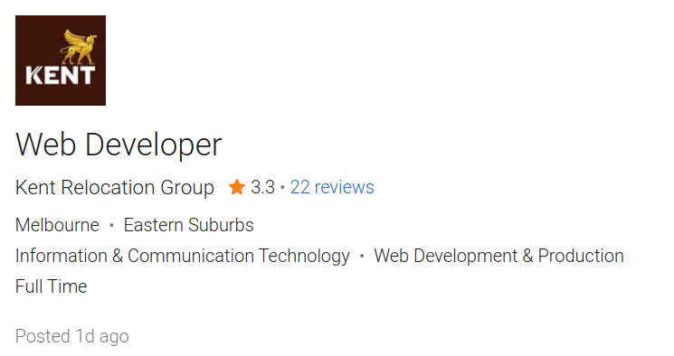
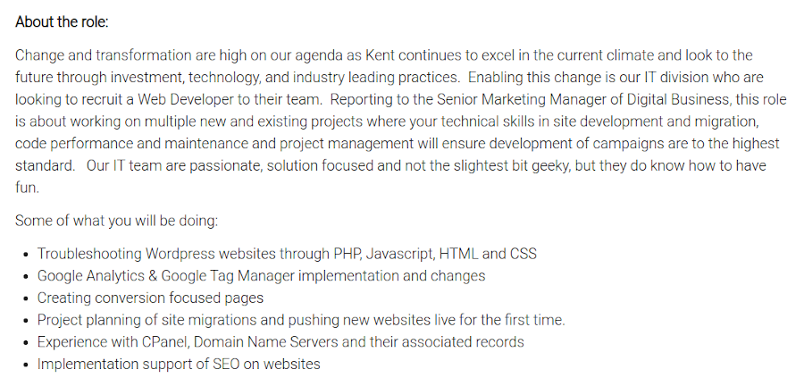

The perfect job I found at Seek.com.au is Web Developer at Kent Relocation Group.
Link:https://www.seek.com.au/job/53767640
The company is looking for a Web Developer to develop many new projects and support existing ones.
They expect the new employee to ensure that their technical and website development skills are to ensure
the development of campaigns are to the highest standard. Responsibilities will include Troubleshooting
websites using PHP, Javascript, HTML and CSS; Creating conversion-focused pages and Google Analytics;
Creating conversion-focused pages. I really like this position and I would like to get it because I really
love Web programming and everything related to the development of new user-friendly Internet sites.
The candidate is required to have analytical skills and some aesthetic skills in website development.
In addition, knowledge of programming languages and experience in HTML, jQuery, JavaScript, CSS, PHP are required.
Knowledge of such programs as WordPress CMS, WooCommerce, WordPress is also required. Successful candidates have
to be familiar with browser testing and debugging, have to be knowledgeable of the web development process
(design and deployment).
At the moment I know HTML, CSS, I am learning JavaScript and will soon start learning PHP.
I have experience in developing simple internet sites and this experience may come in handy for me.
Also, I'm going to consider working with WordPress and WooCommerce. I think I have the aesthetic taste and analytical
skills required by the employer.
My plan for this or a similar position is that I have thought out my study plan at RMIT and that I will develop
skills and study web development programs by myself. After Introduction to Information Technology
I'm going to take Introduction to Programming and User-Centred Design. And after completing these two
courses - Core Subjects Web Programming and Database Concepts. The User-Centred Design course will teach me
how to properly design sites and programs at the request of clients and what functions these sites and programs
should have. This is very important since the creation of user-friendly programs and compliance with the customer's
requirements is the most important stage in the development. The Web Programming course will teach me to understand
modern languages, constructs used on the Web (such as HTML5, Advanced CSS, JavaScript, jQuery, Bootstrap, JSON and PHP),
how to design and correctly interact with a website with databases, and more. The Database Concepts course will
teach me to understand and work with SQL-based databases. Databases are one of the essential aspects to be aware
of when creating internet sites. Client-server communication is very widely used to retrieve data from a database
using SQL. I will be able to complete these courses in May 2022 and think that
I can find myself a job as a Web Developer and continue my education in Bachelor of Information Technology.
Company poster
|

Position
|

About the role
|

About you
|